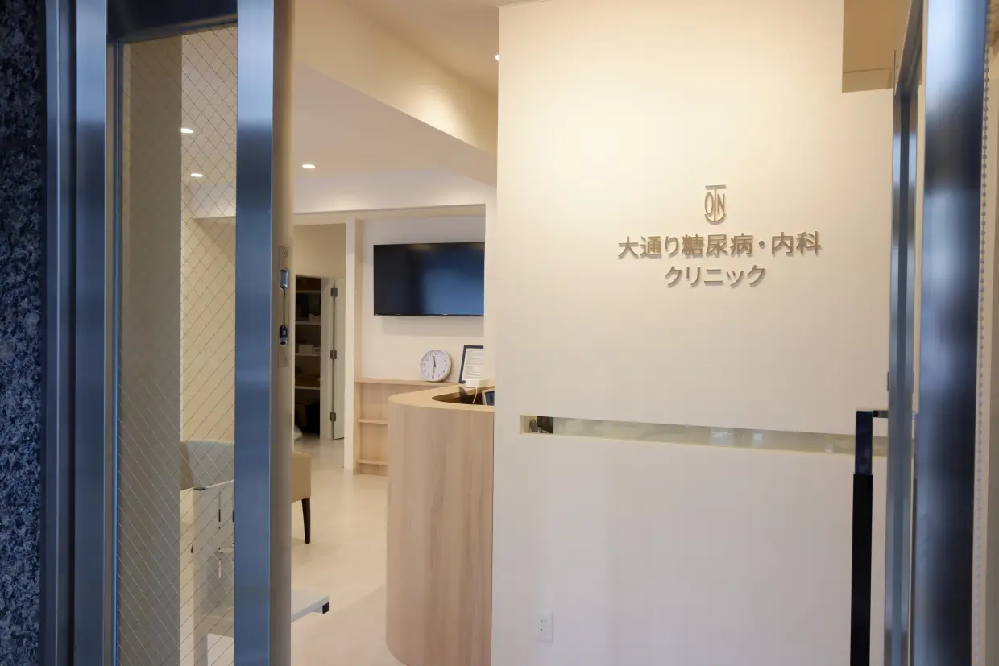

DIABETES & INTERNAL MEDICINE
糖尿病とともに、
より健やかな毎日を。
専門性と安心を大切にした
身近なクリニックです。

DIABETES CARE
一人ひとりに寄り添う
糖尿病診療。
患者さまの生活に合わせた
無理のない治療を目指します。

LIFESTYLE DISEASE
健康な未来のために、
今できることを。
高血圧・脂質異常症など
生活習慣病もご相談ください。

FOR YOUR HEALTH
「相談してよかった」と
思っていただける場所へ。
丁寧な説明とコミュニケーションを
大切にしています。

CLINIC
通いやすく、
続けやすい医療を。
大通駅から徒歩圏内。
お気軽にご来院ください。
医院案内
CLINIC
| 医院名 | 大通り糖尿病・内科クリニック |
|---|---|
| 所在地 | 北海道札幌市中央区北1条西7丁目1番地 広井ビル1階 |
| 電話番号 | 011-205-0811 |
| FAX番号 | 011-205-0822 |
| 診療時間 | 火曜日～土曜日 8:00～12:30、14:00〜16:00 ※受付時間は午前12:00まで、午後15:30までとなります。 |
| 休診日 | 月曜日・日曜日・祝日 |
当院の医療機器
FACILITY院内設備
当院で可能な検査
- 血糖、HbA1c測定
- 血算赤血球、白血球、血小板、肝機能AST、ALT、LD、総ビリルビン、γ-GT、ALP、総蛋白、尿素窒素、クレアチニン、Na、K、Cl、尿酸、中性脂肪、HDL-C、CPK、CRP（炎症反応）測定（院内測定）
外部検査会社札幌臨床検査センターで測定
- 尿定性検査
- ブドウ糖負荷試験
- 尿中微量アルブミン/クレアチニン比検査（半定量）：糖尿病早期腎症を評価します（外部検査会社で測定）
- 身長・体重・腹囲測定
- 自動血圧計
- 心電図・CVR-R
- 脈波伝播速度（PWV）・足関節上腕血圧比（ABI）検査：動脈硬化を評価します
検査機器一覧
- 生化学（ドライケムNX-600i）
- 血糖値・HbA1c (アダムスハイブリットAH-8290)
- 血液学（pocH-80i）
- 尿検査（US1200）
- 心電図・血圧脈波検査装置（VaSera VS-2000）
設備ギャラリー
保険医療機関における書面掲示
FACILITY STANDARDS電子的診療情報連携体制整備加算について
当院では、電子的診療情報連携体制整備加算に係る施設基準に基づき、質の高い医療を提供できるよう以下の体制を整備しています。
- オンライン請求を行っています。
- オンライン資格確認を行う体制を有しています。
- 領収書発行の際に個別の診療報酬の算定項目が分かる明細書を無料で発行しています。
- 医師が、電子資格確認を利用して取得した診療情報を、診療を行う診察室または処置室等において、閲覧又は活用できる体制を有しています。
- 電子処方箋を発行する体制を整えています。
- 電子カルテ情報共有サービスを活用できる体制については当該サービスの対応待ちです。
- マイナ保険証利用率は30％以上の実績を有しています。
- 明細書発行に関する事項、医療DX推進の体制に関する事項ついて、当院の見やすい場所及びウェブサイト等に掲示しています。
- マイナポータルの医療情報等に基づき、患者からの健康管理に係る相談に応じています。
一般名処方加算について
当院では、後発医薬品のある医薬品について、特定のメーカー・医薬品名を指定するのではなく、薬剤の成分をもとにした『一般名処方』を行っています。特定の医薬品の供給が不足した場合でも、一般名処方により必要な医薬品を提供しやすくなります。
長期収載品の選定療養費について
長期収載品の選定療養費とは？
- 患者さんが後発医療品(ジェネリック医薬品)のある先発医薬品（長期収載品）を選択した場合に、その差額の4分の1を自己負担していただく制度です。
- 患者さんが長期収載品を希望された際は、選定療養費として自己負担が発生します。
対象となる医薬品
- 後発医薬品が市販されて5年以上経過した長期収載品、または後発医薬品への置換率が50%以上を超える長期収載品が対象となります。(在宅注射薬も対象となります。)
対象外となる医薬品
- 医師が医療上の必要性があると判断した場合
- 後発薬品の提供が困難な場合
- バイオ医薬品
負担金額
- 長期収載品(先発医薬品)の薬価と、後発医薬品で一番高い薬価の価格差から4分の１を選定療養費としてお支払いいただきます。
※選定療養費には消費税もかかります。
外来・在宅ベースアップ評価料について
- 当院では、医療現場で働く職員の賃上げを実施することにより、人材確保に努め、良質な医療提供を継続できるよう取り組んでいます。
- 本評価料で得られた診療報酬は、対象職員の賃金改善に充てられます。
紹介先・提携病院
PARTNER CLINIC当クリニックは、他医療機関と緊密な診療連携を結んでいますので、入院や精密な検査が必要な際には、適切なタイミングでのご紹介が可能です。
- 北海道大学病院
- NTT東日本札幌病院
- 斗南病院
- KKR札幌医療センター
- 萬田記念病院
- 華岡青洲記念病院
病態に応じて、その他医療機関様にもご紹介させていただきます。